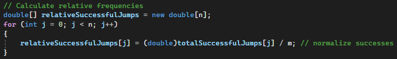
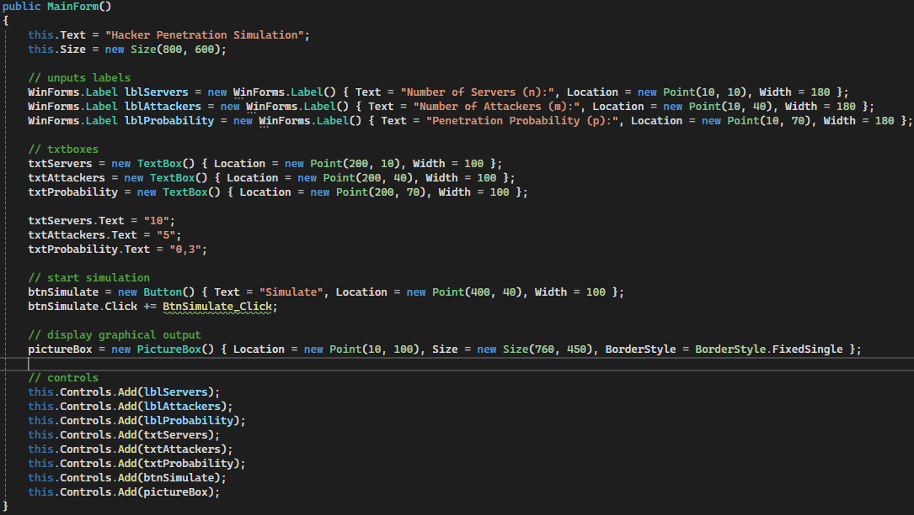

Statistics Blog - Cybersecurity
Homework 2
Welford's Recursion
Welford's method provides an elegant and efficient way to compute the mean and variance incrementally, avoiding the need to store all the data points or recompute the entire dataset each time. For a dataset \( x_1, x_2, \dots, x_n \), the recursion updates the mean \( \mu_n \) and the sum of squares \( M_n \) as new data points arrive.
At each step, the following 2 steps are made:
Mean Update
\( \mu_n = \mu_{n-1} + \frac{x_n - \mu_{n-1}}{n} \)
Here:
- \( \mu_n \) is the updated mean after \( n \) observations.
- \( \mu_{n-1} \) is the mean of the first \( n-1 \) observations.
- \( x_n \) is the new data point being added.
- \( n \) is the total number of observations so far.
Variance Update
The variance \( \sigma_n^2 \) after the \( n \)-th data point can be updated using:
$$ M_n = M_{n-1} + (x_n - \mu_{n-1})(x_n - \mu_n) $$
$$ \sigma_n^2 = \frac{M_n}{n} $$
Where:
- \( M_n \) is the sum of squares of differences from the current mean, and is updated incrementally.
- \( \sigma_n^2 \) is the variance after \( n \) data points.
This recursion allows the mean and variance to be computed in one pass over the data, which is computationally efficient, especially for large datasets.
Example Calculation
Let's take a simple example with a sequence of data points: \( x_1 = 5 \), \( x_2 = 7 \), \( x_3 = 9 \).
Step 1: Initialization
\[ \mu_0 = 0, \quad M_0 = 0 \]
Step 2: Update for each new data point
For \( x_1 = 5 \):
Mean update: \[ \mu_1 = \mu_0 + \frac{x_1 - \mu_0}{1} = 0 + \frac{5 - 0}{1} = 5 \]
Sum of squares update: \[ M_1 = M_0 + (x_1 - \mu_0)(x_1 - \mu_1) = 0 + (5 - 0)(5 - 5) = 0 \]
For \( x_2 = 7 \):
Mean update: \[ \mu_2 = \mu_1 + \frac{x_2 - \mu_1}{2} = 5 + \frac{7 - 5}{2} = 6 \]
Sum of squares update: \[ M_2 = M_1 + (x_2 - \mu_1)(x_2 - \mu_2) = 0 + (7 - 5)(7 - 6) = 2 \]
For \( x_3 = 9 \):
Mean update: \[ \mu_3 = \mu_2 + \frac{x_3 - \mu_2}{3} = 6 + \frac{9 - 6}{3} = 7 \]
Sum of squares update: \[ M_3 = M_2 + (x_3 - \mu_2)(x_3 - \mu_3) = 2 + (9 - 6)(9 - 7) = 8 \]
Step 3: Variance Calculation
After processing all three data points, the variance is calculated as follows:
\[ \sigma_3^2 = \frac{M_3}{3} = \frac{8}{3} \approx 2.67 \]
Final result:
- Mean: \( \mu_3 = 7 \)
- Variance: \( \sigma_3^2 \approx 2.67 \)
Euler–Maruyama Simulator
Attack Simulation
This updated code from the previous homework (1) now includes the possibility for
attackers to jump both up and down, making the simulation more flexible.
At each step, attackers can either move up (+1) or down (-1) based on a random value
compared to the probability p.
If the random number is less than p, they move up; otherwise, they move
down. The movement is restricted within a range,
from a maximum of 20 to a minimum of -20, ensuring the attackers don’t go beyond these
limits.
This is different from the earlier version where attackers could only jump upward.
The positionAtNSteps array stores the attackers' positions when they reach
exactly n_steps.
This is useful for calculating intermediate distributions, as it lets us analyze the
attackers' positions at a specific point
in the simulation, rather than only looking at their final positions.
totalSuccessfulJumps tracks how many times attackers successfully jumped up
at each server.
This data is used to calculate the absolute and relative frequencies of upward jumps for
each server, giving a clearer view of
how many positive moves happened compared to the total number of attackers.
These frequencies will later be plotted to show the overall distribution of successes,
helping to visualize the results of the random walk simulation.
Relative Frequency
This code calculates the relative frequencies of successful upward jumps at each server.
For each server (j), it takes the total number of successful jumps
(totalSuccessfulJumps[j]), which was tracked during the simulation, and
divides it by the total number of attackers (m). This process normalizes
the data, providing a proportion (or relative frequency) of how many times attackers
successfully moved up at each server relative to the total number of attackers.
The result is stored in the array relativeSuccessfulJumps, where each value
represents the fraction of successful upward movements at a specific server. This allows
us to understand, for each server, how likely it was for an attacker to make an upward
jump, scaled relative to the total number of attempts.
Attack Simulation Exercise
The code represents an application that simulates the number of successful penetration attempts of hackers on servers. The application takes inputs from the user, simulates the penetration attempts using random probability, and visualizes the results both as a line graph and a histogram.
Below is a step-by-step breakdown of the code with key snippets:
Constructor: The constructor initializes the form and adds the necessary controls, including labels for the inputs, text boxes, a button, and a PictureBox for visualization.
Attack Simulation Diagram
This diagram represents an application that simulates the number of successful penetration attempts of hackers on servers. Below is a step-by-step breakdown of the code with key snippets.
Graph Explanation
After calculating the results, the method draws the graph on the PictureBox. It plots the cumulative penetration successes for each attacker over multiple servers using different colors for each attacker. Grid lines and axis labels are also added to the graph.

This graph represents a simulation of penetration attempts by multiple hackers on a network of servers. The x-axis shows the number of servers (from 1 to 10), while the y-axis represents the cumulative number of successful penetrations by each hacker. Each colored line corresponds to a different hacker, and the height of the line indicates the total number of successful penetrations by that hacker up to each server.
After the line graph, a histogram form is opened in another window, that displays the distribution of the number of successful penetrations by attackers.
It also shows the Arithmetic Average of the servers penetrated and the Variance.